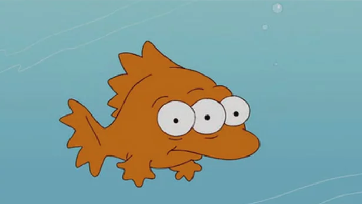

Japón comenzará a verter al mar el agua tratada de Fukushima en dos años
Internacional
por Juana de Barco
(05:32 GMT) 14 Abril, 2021 
En dos años, Japón va a empezar a verter al mar más de un millón de toneladas métricas de agua radiactiva tratada de su planta nuclear de Fukushima, dijo el Gobierno el martes. Este plan enfrenta oposición a nivel interno y generó una «preocupación grave» en países vecinos.
La decisión de descargar las aguas residuales llega más de una década después del desastre nuclear en la planta de Fukushima Daiichi en 2011. Se había retrasado en repetidas ocasiones por preocupaciones sobre la seguridad y una fuerte oposición de pescadores locales que aún se recuperan de las consecuencias de la crisis.